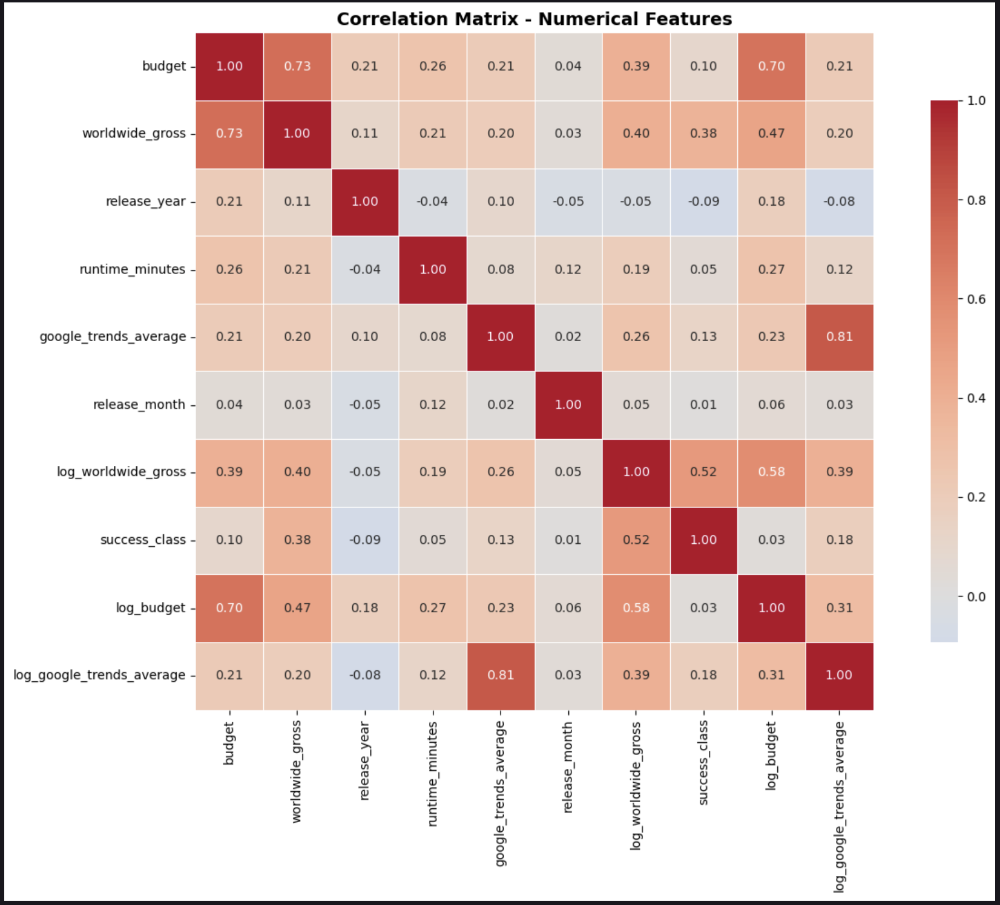
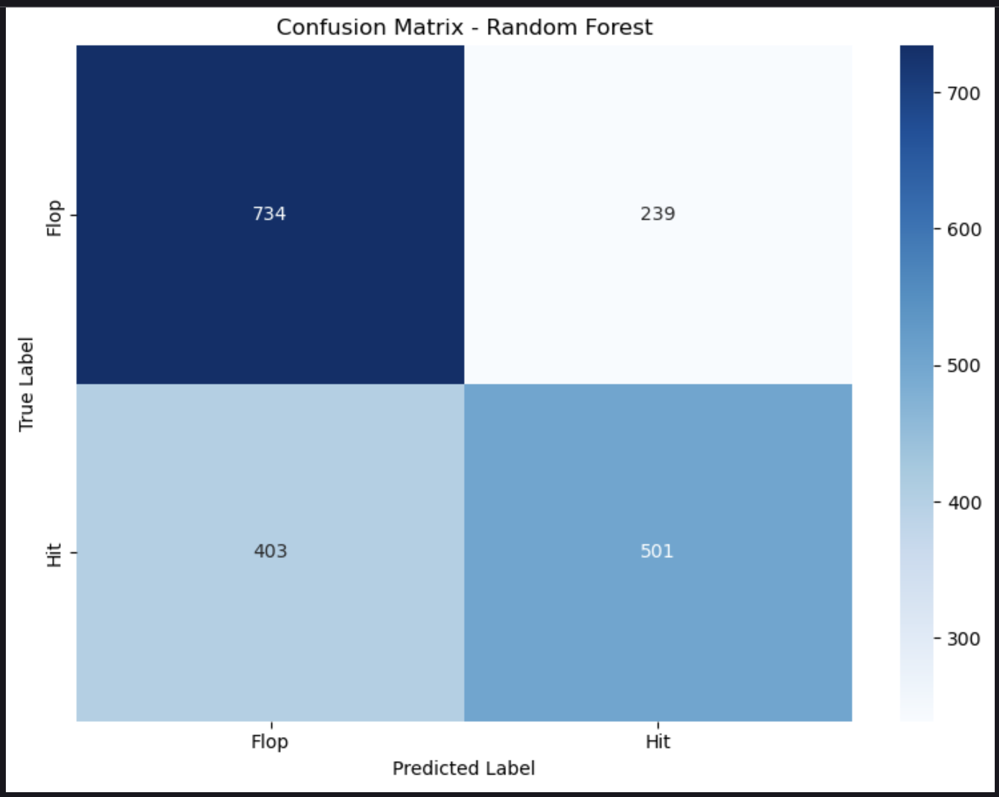
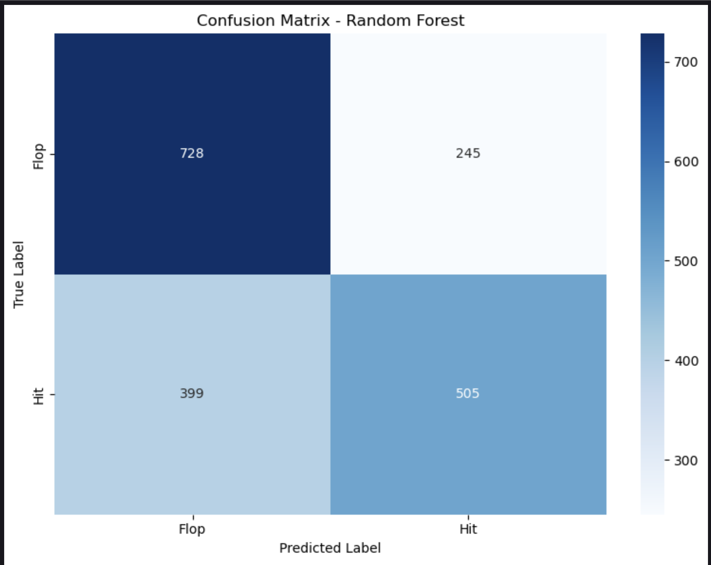
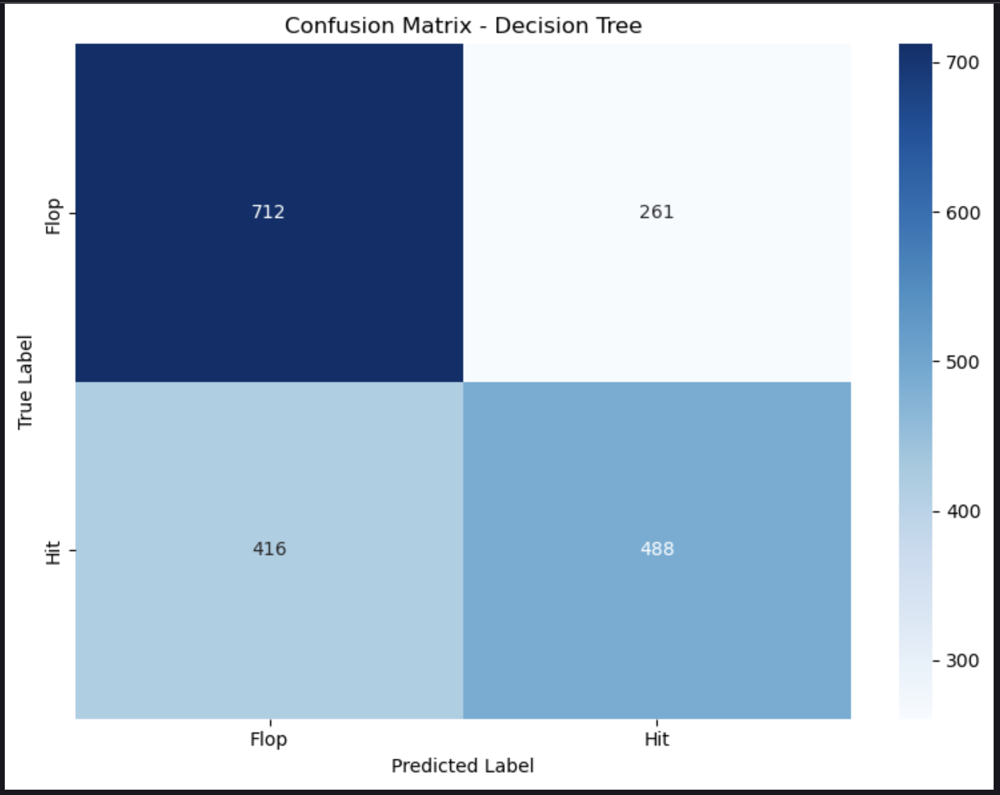

Visual Explorations
A curated set of visual stories tracing data quality checks, exploration, model building, and deployment views.
Data Quality & Shape
Missing‑value patterns, outliers, and distribution fixes that prepare the raw data.
Exploratory Patterns
Relationships between budget, revenue, timing, audience interest, and success.
Model Tuning & Performance
Validation curves, learning curves, ROC/PR plots, and confusion matrices.
Feature Importance & Use
Which factors drive predictions and how the results surface in the web UI.
0. Data Quality & Missingness
Visualizations that diagnose completeness, missing-value structure, and the impact of basic cleaning steps before modelling.

Q1 · Data Completeness Heatmap
Presence-versus-missing heatmap across key fields for a random sample of movies, highlighting which variables require imputation.

V3 · Missingness Correlation
Correlation matrix of missing‑value indicators to identify features that tend to be absent together and may share common causes.

V4 · Missing Data Pattern
Binary pattern of missingness across a 500‑movie sample, showing which combinations of fields are most frequently incomplete.

Q4 · Outlier Treatment Example
Boxplots of runtime before and after IQR-based caps, illustrating how extreme values are controlled while preserving the bulk of the data.

Q2 · Missing Data Pattern
Binary pattern of missing and present values across 500 movies, used to detect structured gaps and problematic feature groups.

Q3 · Correlation of Missingness
Correlation heatmap of missing-value indicators, showing which fields tend to be missing together and may share common causes.
1. Data Wrangling & Exploratory Analysis
Visualizations that reveal distributions, relationships, and anomalies in the raw movie data.
V8 · Numerical Correlation Matrix

Heatmap of correlations between budget, worldwide gross, timing, and log‑transformed variables, used to spot redundant or highly coupled features before modeling.

V3 · Log‑Scale Revenue vs Budget
Histogram and scatter plot on log scales showing the long‑tail nature of revenue and the non‑linear budget–earnings relationship.

V5 · Budget vs Worldwide Gross
Log‑scale scatter of budget against worldwide gross, colour‑coded by ROI to highlight unusually profitable or unprofitable movies.

V10 · Validation Curve (n_estimators)
Training and cross‑validation F1 scores versus the number of estimators, used to pick a capacity that avoids overfitting.

V11 · Hyperparameter Sensitivity (XGBoost)
Mean F1 scores across ranges of key XGBoost hyperparameters, guiding the grid‑search design and interpreting which knobs matter most.

V12 · Learning Curve (XGBoost)
Learning curve showing how training and cross‑validation F1 evolve as more training examples are added, indicating remaining data hunger.

V9 · Pairplot of Top Predictive Features
Pairwise scatterplots and distributions of key predictors, coloured by success class to visualise separability in feature space.
2. Feature Engineering & Importance
Visualizations that explain how raw metadata is transformed into predictive signals.

V23 · XGBoost Importances (Grid Search)
Top 15 features in the grid‑search XGBoost model, showing franchise status and pre‑release interest as the strongest drivers of success.

V24 · XGBoost Importances (Tuned)
Feature importance profile of the tuned XGBoost model, used to interpret which engineered variables most influence predictions.

V25 · XGBoost Importances (Compact)
Compact bar chart of top XGBoost feature importances, reinforcing which predictors consistently dominate across model variants.

V13 · GridSearchCV Diagnostics
Left panel ranks parameter combinations by mean test F1, while the right panel compares train and test F1 scores to check overfitting.

V8 · Feature Correlation with Success Class
Correlation coefficients between each engineered feature and the success class target, highlighting which variables are most predictive.

V26 · Model‑Comparison Feature Importances
Side‑by‑side importances for decision tree, random forest, and XGBoost, showing which predictors are consistently influential across models.
3. Model Performance & Confusion Matrices
How well models separate Flop, Average, and Hit movies.

V17 · Decision Tree
Confusion matrix for the decision tree baseline, showing how a simple interpretable model separates Flop and Hit movies.
V18 · Random Forest (Baseline)
Baseline random forest confusion matrix, improving class‑wise accuracy over the decision tree, but still misclassifying some clear hits.

V19 · Random Forest (Tuned)
Tuned random forest confusion matrix, reducing errors for both Flop and Hit classes through optimized hyperparameters.

V20 · XGBoost (Test)
XGBoost confusion matrix on the held‑out test set, showing the final model’s balance between correctly predicted flops and hits.

V21 · XGBoost (Grid Search)
Confusion matrix for the grid‑search XGBoost model, comparing predicted and true Flop/Hit labels.

V22 · XGBoost (Tuned)
Confusion matrix for the tuned XGBoost model, showing improvements in both Flop and Hit prediction accuracy after hyperparameter tuning.

V16 · ROC Curves (Model Comparison)
ROC curves and AUC scores for all three models, summarizing their ability to separate hits from flops across thresholds.

V15 · Precision–Recall Curves
Precision–recall curves for all models, emphasising performance in the high‑precision, high‑recall region relevant for movie success prediction.
4. Deployment & Simulation Views
How the analysis is exposed in the web interface for exploration and “what‑if” experiments.

V22 · Simulation Form
Input form for specifying genre, cast, director, budget, and release window to obtain Flop/Average/Hit predictions.